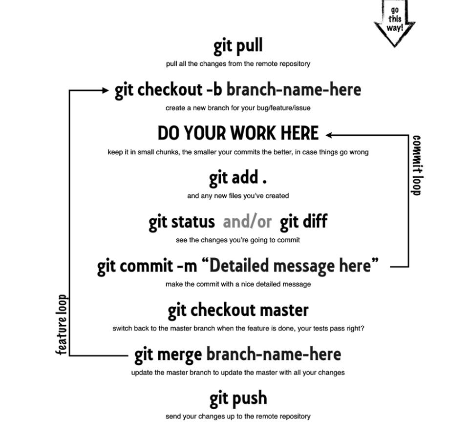

Welcome to GitHub Pages of Webtechnologie 2.
This automatic page generator is the easiest way to create beautiful pages for all of your projects. Author your page content here using GitHub Flavored Markdown, select a template crafted by a designer, and publish. After your page is generated, you can check out the new branch:
$ cd your_repo_root/repo_name
$ git fetch origin
$ git checkout gh-pages
If you're using the GitHub for Mac, simply sync your repository and you'll see the new branch.
LAB 1: VERSION CONTROL WITH GIT
Install Git
installeer git hier
Als je gebruik maakt van een windows is het belangrijk dat je tijdens de installatie aangeeft dat je wil dat git een path variabele aanmaakt. Dit pad zal ervoor zorgen dat je "git" globaal kan gebruiken.
Core Concepts
git clone repository linkkopieert repository lokaalgit commit -mvoert de veranderingen uitgit pushpusht de commits naar repositorygit pullkopieert nieuwe commits locaalgit branchmaakt een "tak" aan waarin je kan in werkengit checkout master/branchnameverander tussen branchesgit merge "branchname"voegt de bewerkte bestanen in branch toe aan master tak
Git workflow
Werk je samen aan eenzelfde repository of werk je gewoon alleen? Volg steeds deze afbeelding,om correct te werken met git, zonder dubbele gegevens te genereren, fouten en lege pagina's
Pull request
Pull requesten worden gebruikt om projecten van anderen te verbeteren. Het is een notificatie naar de projecthouder, dat hij je nieuwe aanpassingen op zijn project moet bekijken en eventueel goedkeuren als deze voor hem goed zijn.
- Fork
Fork de repository waaraan je wil meewerken naar je eigen github/computer
- Work
Werk aan de bestanden in een branch en publiceer de branch nadien
- Request
Vraag een pull request aan. Vergeet geen duidelijke message in te geven
LAB 2 : MASTERING CSS ANIMATIONS
Core Concepts
Transitions Transform(ation)s Animations Translates
TransitionsS
CSS3 transities geven je de mogelijkheid om een property value, vlot van een ene value te veranderen naar een andere
VB: Verander de kleur van een element bij hover
VB: Beweeg een element
#circle {
width: 200px;
height: 200px;
background-color: white;
border-radius: 50%;
transition: height 1s linear, width 1s linear, background-color 5s linear;
}
#circle:hover {
height: 300px;
width: 300px;
background-color: red;
}
Transformations
Veranderen de fysieke weergave van een element
VB: Verander de groote van een element
VB: Draai/spin een element
VB: verplaasts een element
#shape {
width: 150px;
height: 150px;
background-color: #e74c3c;
transition: -webkit-transform 1s;
}
#shape:hover {
-webkit-transform: scale(2) translateY(100px) rotate(45deg);
}
Animations
Hier maakt men gebruik van keyframes, die kunnen loopen en automatisch starten.
.automatic {
-webkit-animation: moveIt 2s infinite;
}
@-webkit-keyframes moveIt {
0% { }
25% { -webkit-transform: rotate(45deg);}
50% { left:50%; top: 50%; -webkit-transform: scale(2.5) rotate(45deg);}
100% { -webkit-transform: rotate(0deg);}
}
LAB 3 : ADVANCED JAVACRIPT
Prototypes
Met prototypes kan je je eigen mini framework schrijven. Het voordeel hiervan is dat je geen Jquery framework moet inladen.Dit zorgt ervoor dat je applicatie sneller zal starten dan wanneer je die library wel inlaadt. Meer informatie over objectgeoriënteerd programmeren in JavaScript vind je hier.
HTMLElement.prototype.markAsDone = function(){
this.style.textDecoration = "line-through";
this.style.color = "gray";
};
var e = document.getElementById('todo-item1');
e.markAsDone();
Introduction to Object-Oriented JavaScript
Object-georiënteerd programeren in javaScript beschikt over krachtige, flexibele mogelijkheden. Bekijk deze website zeker en vast. Deze website begint met een inleiding over objectgeoriënteerd programmeren , gevolgd door een overzicht van de JavaScript-object model , en tenslotte tonen ze concepten van objectgeoriënteerd programmeren in JavaScript .
Wrapping Objects
In JavaScript kan je je eigen objecten definieren. Bijna alles erft van objecten. Welke objecten ken je zonder je misschien weet dat ze objecten zijn?
- Strings
- Booleans
- Numbers
LAB 4 :BUILDING AN APP PROTOTYPE WITH API'S
Creating Objects
Object constructor method
var steve = new Object(); steve.firstName = "Steve"; steve.lastName = "Jobs"; steve.breathes = function(){ console.log(this.firstName + ' is breathing!'); }
Een shortcut, genaamd Object Literal
var steve = { 'firstName': "Steve", 'lastName': "Jobs", 'breathes': function(){ console.log(this.firstName + ' is breathing!'); } }
Functions
Er bestaan drie manieren om een functie te maken, gebruik deze
var speak = new Function('what', 'alert(what)'); function speak(what){ alert(what) }; var speak = function(what){ alert(what); };
var Person = function(){};
var steve = new Person();
var bill = new Person();
Constructors bestaan ook als function arguments
var Person = function(firstName, lastName){ this.firstName = firstName; this.lastName = lastName; }; var steve = new Person("Steve", "Jobs"); var bill = new Person("Bill", "Gates");
Functies toevoegen aan objecten
var Person = function(firstName, lastName){
this.firstName = firstName;
this.lastName = lastName;
this.sayName = function(){
alert('Hi, my name is ' + this.firstName);
}
};
var steve = new Person("Steve", "Jobs");
var bill = new Person("Bill", "Gates");
steve.sayName();
bill.sayName();
Prototypes and prototypical inheritance
Prototypes
var Person = function(firstName, lastName){ this.firstName = firstName; this.lastName = lastName; }; Person.prototype.sayName = function(){ alert("hi my name is " + this.firstName); } var steve = new Person("Steve", "Jobs"); var bill = new Person("Bill", "Gates"); steve.sayName(); bill.sayName();
prototypical inheritance
var Person = function (naam, leeftijd) { this.naam = naam; this.leeftijd = leeftijd; this.sayname= function(){ console.log("hi my name is "+ naam); }; } var Student= function(naam, leeftijd, studies){ this.prototype = new Person(naam, leeftijd); this.studies = studies; this.sayname = function(){ this.prototype.sayname(); console.log("I study "+ this.studies); } } var jorre = new Person ("Alice", 33); var willy = new Student("Steve", 22, "IMD"); jorre.sayname(); willy.sayname();
AJAX
XMLHttpRequest()
xmlhttp = new XMLHttpRequest(); xmlhttp.open("GET", "https://data.irail.be/NMBS/Stations.json); xmlhttp.send();
JSONP
JSONP is een manier om met JavaScript Cross-Origin Requests te doen. Dat wil zeggen om requests te doen naar een server binnen een ander (sub)domein dan het huidige. Dit is namelijk met een standaard XMLHttpRequest niet mogelijk wegens veiligheidsoverwegingen. In nieuwe browsers is dit probleem opgelost door de implementatie van Cross-origin resource sharing (CORS). De implementatie van CORS vraagt echter om complexere aanpassingen van je webservice dan JSONP en wordt bovendien niet ondersteunt door oude browsers en veel mobiele browsers. Veel webservices maken daarom nog steeds gebruik van JSONP om Cross-Origin Requests af te handelen.
$ .ajax({
url: "http://urlvanapi" ,
dataType: jsonp ,
success: function ( response ){ //do stuff here }
});Localstorage
Bij localStorage kunnen we gegevens lokaal opslaan.Dit is perfect voor bijv. caching API-calls ! Om de limiet van x-aantal calls per dag te omzeilen, kan je de data die je opgevraagd hebt storen voor x-aanta
- Cookies kunnen worden gelezen door de server ( $ _COOKIES)
- LocalStorage is slechts client-side
- Cookies kan rond 4kb opslaan,localStorage kan tot 5 MB per domein opslaan
- Browser ondersteunt localstorage vrij goed
localstorage.setItem("weather", response);
var weather = localstorage.getItem("weather");
Geolocation
is een methode voor het achterhalen van geografische locaties van een computer. Dit kan aan de hand van een WIFI/IP -signaal maar dit kan evengoed afkomstig zijn van een GPS module. (vb. een iPhone of een andere smartphone) Sinds kort is hier ook ondersteuning voor verschillende webbrowsers.(meer info standaard: hier ) Dit maakt mogelijk dat u in de inhoud van uw website, selecties kan maken over wat de gebruiker te zien krijgt.
function getLocation() {
if(navigator.geolocation) {
navigator.geolocation.getCurrentPosition(getWeather);
}
else {
alert("Geolocation is not supported by this browser.");
}
}
function getWeather(position){
$.ajax({
url:"https://api.forecast.io/forecast/3e5beed1dc0749ae29a685ea773f3d6f/" + position.coords.latitude + "," + position.coords.longitude,
dataType:"jsonp",
success: function(response) {
w.innerHTML = Math.round((response.hourly.data[24].temperature - 32)/1.8) + " °C"; //temperatuur van volgende dag halen (24 uur later dan het huidige uur)
om.innerHTML = response.daily.data[1].summary; //algemene omschrijving van volgende dag halen
min.innerHTML = "Min: " + Math.round((response.daily.data[1].temperatureMin-32)/1.8) + " °C"; //min temp van volgende dag halen
max.innerHTML = "Max: " + Math.round((response.daily.data[1].temperatureMax-32)/1.8)+ " °C"; //max temp van volgende dag halen
console.log(response);
LAB 5 : NODE.JS AND WEB SOCKETS
Wat is node?
Node.js is een softwareplatform waarop men applicaties kan ontwikkelen en draaien. Die applicaties worden geschreven in JavaScript, maar in tegenstelling tot veel andere Javascript-toepassingen, worden die niet uitgevoerd in een webbrowser, maar in de JavaScript-Engine van Node.js zelf, die op de server draait. De applicaties kunnen draaien op elke computer waarop de Node.js runtime is geïnstalleerd, dat kan Windows, Mac OS X of Linux zijn. Node.js bevat een ingebouwde HTTP-server, waardoor het mogelijk is een webserver te draaien zonder Apache of Lighttpd. Daardoor biedt Node.js een alternatieve manier van Server-side scripting, vergeleken met andere platformen.
Non-Blocking io
Opdrachten moeten niet meer wachten tot alles klaar is met laden.
Synchronous
var result = database.query("SELECT * FROM hugetable"); console.log("Hello World");
Asynchronous
database.query("SELECT * FROM hugetable", function(rows) { var result = rows; }); console.log("Hello World");
passing anonymous functions as parameters
function say(word) { console.log(word); } function execute(someFunction, value) { someFunction(value); } execute(say, "Hello");
passing anonymous functions as parameters
function execute(someFunction, value) { someFunction(value); } execute(function(word){ console.log(word) }, "Hello");
Websockets
WebSockets is een geavanceerde techniek die het mogelijk maakt om een interactieve verbinding te openen tussen de browser van een gebruiker en een server. Met deze API kunnen berichten naar een server worden verzonden en event-gebaseerde antwoorden worden ontvangen, zonder de server te moeten pollen voor een antwoord.
Lees hier meer
Installeer socket.io
npm install socket.io --save
Het is belangrijk om te weten wanneer je app moet luisteren of moet sturen aangezien deze allebei een andere code vragen.
Luisteren
Io.on
Sturen
Io.emit
Jade
Jade is een kort en eenvoudig templating taal met een sterke focus op de prestaties en krachtige functies .
Voorbeeld jade syntax
doctype html
html(lang="en")
head
title= pageTitle
body
h1 Jade - node template engine
#container.col
if youAreUsingJade
p You are amazing
else
p Get on it!
p.
Jade is a terse and simple
templating language with a
strong focus on performance
and powerful features.
mongoDB
MongoDB is een opensource document-georiënteerde database en is geschreven in C++. Er is geen schema, de documenten worden in de vorm van BSON (binair JSON) opgeslagen en de structuur van deze documenten is flexibel. De database kan gemakkelijk gedistribueerd worden, de data wordt dan over meerdere computers verspreid om gedistribueerde gegevensverwerking mogelijk te maken. MongoDB is geen relationeel databasemanagementsysteem, er is geen ondersteuning voor joins. MongoDB wordt gerekend tot de zogenaamde NoSQL-databases.
Mini appje!
Volgende stappen gebruik je steeds als je een nieuwe applicatie in node wil bouwen.
1. EXPRESS
npm install express -gNu kan je globaal op je computer een basis node app instaleren
2. Package.json
npm installDit bestand beschrijft uw applicatie. Het bevat alle data en dependencies die je nodig hebt voor je applicatie npm install zorgt dat de modules automatisch installeert OPGELET: Vergeet de node_modules folder niet te ignoren voor git. De paths van deze modulesk kunnen soms te lang zijn om mee te pushen op git
3. Start mongo
mongo mongodVooraleer je je project gaat opstarten, moet je je database opstaren. Indien je mongodb nog niet geinstaleerd hebt volg dit stappenplan
4. Start Applicatie
node app.js - node bin/www nodemon app.js - nodemon bin/www npm startNodemon, node en npm sart zorgen ervoro dat de applicatie opstart en zo gezien kan worden in de browser. Wat is het verschil tussen node en nodemon? Nodemon zal de applicatie automatisch updaten als er iets wordt gewijzigd in de applicatie. Indien je nodemon nog niet geinstalleerd hebt, moet je deze code gebruikennpm install nodemon -g
Lab 6 : Angular.js
AngularJS is een JavaScript-framework dat geheel ontwikkeld is om tegemoet te komen aan de eisen van grote en complexe webapplicaties. AngularJS is oorspronkelijk gemaakt voor een intern project bij Google, maar inmiddels is er ook een grote open source-community actief. In AngularJS ontwikkel je niet één grote applicatie waarin alles met alles verbonden is. In plaats daarvan maak je kleinere, gespecialiseerde modules. Deze zijn los van elkaar te ontwikkelen en te testen. Op de plekken waar ze nodig zijn in de applicatie, worden ze dynamisch ingevoegd via het principe van dependenciesency Injection.
MVC
Angular.js maakt gebruik van MVC, beter gekend als Models, view en controllers
models
Alles wat data en queries bevat
View
User Interface -> Spreekt nooit rechtstreeks met het model. Dit gebeurd vai de controller
Controller
Alle logica, structuur
Directives
markeringen op dom-elementen die aan de angular compiler vertellen dat dat dom-element een specifieke functie heeft
< ul>
< li ng-repeat="item in items">
{{item.description}}
< /li>
< /ul>
How to use Angular?
Eerst en vooral moet je angular download, dat doe je hier
Lab 7 : SASS
SASS biedt een uitgebreide set aan functies en mogelijkheden om gestructureerd te werk te gaan en zo de website te stylen. Zo kan je gebruik maken van een aantal methodes om CSS3 regels met diverse prefixes in 1 regel te schrijven. Met deze prefixes is het mogelijk om versies van specifieke browsers een bepaalde regel te laten ondersteunen. Zo kan CSS2 en CSS3 gebruikt worden voor alle browsers. Sommige versies hebben geen prefixes meer nodig, maar toch wil je rekening houden met oudere versies. Met SASS is het ook mogelijk om je eigen functies te maken om zo repeterende regels toe te voegen aan je stylesheet.
Waarom Sass en andere pre-processoren?
- Minder code
- Variabelen
- Mixins
- Laat je toe je CSS te ordenen
- Geen duizenden lijnen code
Sass instaleren!
Sass kan je installeren via deze link. Windows is een fantastisch besturingssysteem en wilt daarom dat je eerst ruby installeert. De rub-installer dat word aangeraden voor windows is een single-click installer dat alles voor jou installeert
Sass mapping
/css
style.css
/scss
/modules
_nav.scss
_modal.scss
_article.scss
_footer.scss
style.scss
_base.scss
Sass file compiling
Het is makkelijk om sass automatisch te laten compilen zonder je zorgen te hoeven maken
Sass Watches you!
sass --watch style.scss:../css/style.css
--style compressed
Imports
Split je files voor een betere structuur. Zoek hier vooral je eigen perfecte structuur. Al je gegenereerde files moeten samengegoten worden in een file, namelijk de style.scss
Imports in Style.scss
@import 'base';
@import 'partials/nav';
@import 'partials/footer';
Variablen
Kleur Variabele
$color-primary: #e74c3c;
h1 {
color: $color-primary;
}
a {
color: lighten($color-primary, 50%);
}
Font Variabele
$font-helvetica: "Helvetica Neue", Helvetica, Arial, sans-serif;
body {
font-family: $font-helvetica;
}
Nesting
Nakkelijk in Sass is code nesten, zonder steeds alle classenamen en idnamen te gebruiken om dat element te stylen
#container{
p{
strong{
}
em {
}
}
}
Mixins
Mixins zorgen ervoor dat je bepaalde lijnen code slechts 1 keer volledig hoeft uit te schrijven op nadien met 1 lijntje code te gebruiken.
Voorbeeld Mixin
@mixin border-radius($radius) {
-webkit-border-radius: $radius;
-moz-border-radius: $radius;
-ms-border-radius: $radius;
border-radius: $radius;
}
Gebruik bovenstaande mixin
nav {
@include border-radius(10px);
}
Inheritence
Inheretence zorgt ervoor dat we stijl elementen van andere elementen kunnen overerver om zo dubbele code te vermijden
Manier zonderinheritence
.message {
border: 1px solid #ccc;
padding: 10px;
color: #333;
}
.success {
@extend .message;
border-color: green;
}
.error {
@extend .message;
border-color: red;
}
manier met inheritence
.message, .success, .error, .warning {
border: 1px solid #cccccc;
padding: 10px;
color: #333;
}
.success {
border-color: green;
}
.error {
border-color: red;
}
Bourbon
Bourbon is een mixin library die ervoor zorgt dat je minder code zelf moet schrijven
installeer bourbon
bourbon install
Importeer in style.scss
@import 'bourbon/bourbon'
Lab 8 : Gulpjs
Gulp zorgt ervoor dat de performantie van je site of app de hoogte ingaat doordat deze tool css bestanden, javascript, afbeeldingen en anderen gaat compreseren.
Gulp gebruiken?!
1 . Gulp instaleren
npm install gulp -g
2. Gulp lokaal instaleren
//Eerst een package.json installeren npm init ///instaleren in u prijects dev npm install gulp --save-dev
3. Setting up GULP
Maak een file gulpfile.js aan Commit de file naar je repository
4. Load gulp
var gulp = require('gulp'); gulp.task('default', function() { // place code for your default task here });
Gulp-minify-css
Installeer
npm install --save-dev gulp-minify-css //load gulp var gulp = require('gulp'), minifyCSS = require('gulp-minify-css'); gulp.task('minify-css', function() { gulp.src('./src/css/*.css') .pipe(minifyCSS(opts)) .pipe(gulp.dest('./build/css/')) });
CSS combineren met default tasks
Installatie
npm install --save-dev gulp-concat-css
Code
var gulp = require('gulp'), concatCSS = require('gulp-concat-css'), minifyCSS = require('gulp-minify-css'); gulp.task('minify-css', function() { gulp.src('./src/css/*.css') .pipe(concatCSS('build.css')) .pipe(minifyCSS(opts)) .pipe(gulp.dest('./build/css/')) }); gulp.task('default', ['minify-css']);